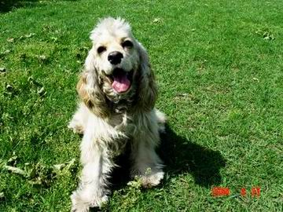

To be or not to be @ May 22, 2004

昏昏沉沉在家里一天。
傍晚下楼溜狗，地上班驳的留有水滴的痕迹，雨点激起的土腥味犹如新鲜空气一样令人振奋，原来，活着还能闻到这许多可人的气息，看着妞妞笑的摸样，体会着傍晚的松弛氛围，活着不赖啊！
 当你发现你离某种感受越来越远，而且那种感受也越来越淡的时候，你浑身开始轻松。无论之前如何禁锢着人们的快乐，轻松即意味着超越！
当你发现你离某种感受越来越远，而且那种感受也越来越淡的时候，你浑身开始轻松。无论之前如何禁锢着人们的快乐，轻松即意味着超越！
事实上，你并不想超越，好似压抑时尽快捧起书来阅读的方式，那必须是一本以你喜欢的表达方式写出来的书，它可以使你摆脱一切现实社会与自己理想世界相斗争相妥协的令人窒息的状况！
你知道你经历了之前最糟糕的遭遇之后，你变得聪明而玩世不恭，前者有助于你判断，后者有助于自我保护！可现在还能保护些什么?
大概只有看喜欢的文学书才能使自己这只氢汽球有被牵引的感觉......这世上我想不通的事情多着呢，想不通何必去想？这世道已经如此，要其改变根本就是天方夜潭，何苦拿别人的问题惩罚自己？还包括放弃那些看似美好实则虚空的事物。
每天早晨半梦半醒时考虑最多的问题是：今天能不能不去上班及今天上班会不会迟到?HANK说我现在是过小日子的女人，我说我羡慕他还有那么多可选择的机会去世界各地遨游，这是否全面的概括了围城理论？我一直等着和JIAIJALING他们去西藏，他们最早回国也要到下半年年底了，我愿意等，因为他们不会让我的等待最终遥遥无期。
晚上他和两个好朋友吃了晚饭一起回来坐坐。妞妞最近很害怕电视柜上坐着的一只毛绒玩具猪，见着它都绕道走。我们告诉他们这个秘密后，毛绒猪成了今晚逗妞妞的主要道具。另外妞妞特喜欢躺沙发，把毛绒猪放沙发上后可以防止她上沙发。
22：30分给妞妞洗澡吹风后，我们仨儿又来到车库坐进车里听音乐，妞妞坐我腿上特安静。当时放的迪克牛仔新专辑《本色》里的那首“死心塌地”。


一、”男人”的疼痛
BESS去商店给母亲买母亲节礼物—理疗仪。
BESS拿起一支温度计，想着这个东西不错，给丸子买了。销售小姐大吓一声：“这是给女人用的，不是给小孩用的。”
BESS问：“什么叫给女人用的？”
小姐称：“测量排卵期的温度计。”
BESS无语。
这时，三位年轻男士走上前询问小姐理疗仪，问：“这是干什么用的？”
小姐大声回答到：“这是治疗‘男人’疼痛用的。”
三男士顿时满面通红，怯生生继续问：“这个东西难道女人就不能用吗？什么是男人的疼痛啊？”
小姐随即大吼道：“是难忍的疼痛，不是男人的疼痛......”
二、洗照片免费
小汤帮BESS洗照片回来，BESS问多少钱啊？
小汤说没给钱。
BESS说那怎么可能呢？你究竟怎么说的？
小汤说：“有美女给你看，还要钱啊？！”
1．我想把我的一生浓缩成一句笑话。
2．不要随便跟人打招呼。没有人认识你。
3．音乐响起的时候，谁能扶持我不瘫痪在地？
4．每赚到一笔小钱，我都觉得又有人想收买我，想让我开口说恭维话。
5．世上有这么多的屁股，我怎能不丢人现眼？
6．我不再要求公平。我不敢，也不好意思要了。
7．我天生怕痒；你明白我的意思，咱俩的关系挺敏感的。
8．蠢材们最恨你对他们的功成名就无动于衷。
9． 我的嘴从未战胜过任何人。我至今仍然相当羞愧。
10．我都被生活折磨成这样儿了，他们居然还问我过得怎么样，这些个不识相的狗杂种！
11．名女人们大都做过孤身穿越森林的梦；那是由无数鸡巴竖起的一片森林。
12．我可能天生是个他妈悲剧人物。我宁愿做个小丑。天哪，我以前可是胸怀大志的呀！
13．捡破烂的兄弟，你为什么瞧不起我，你为什么不把我塞进你的垃圾袋？
14．我从来都是个无业游民，孤独和发笑是我的事业。
15．贱货，你出价也太高了吧？
16．我尊敬过很多人，他们早已被我蔑视得无影无踪了；我爱过的两三个人，至今还被我爱在心里。
17．悍妇破口大骂的时候，我们忍受的是一个死要面子的痰盂。
18．雪花在冬夜凝成冰块，小姐向老板敞开胸怀。
19．如果，天空，只有，一滴雨，落下来，它会巴结谁？
20．人生在世嘛，不过是个面子上的事儿。我只想不要脸。
21．文学是一项可笑的事业。我说什么也得克制自己，尽量保持招人喜爱的微笑。
22．妈妈在隔壁屋里，天堂在我这屋。
23．你走的时候，没有人为你送行；这意味着没有人希望你再回来，没有人愿意再见到你。这么简单的事儿，你干吗老装作不明白呢？
24． 趁着我现在还无权无势，赶紧巴结我吧，我将来绝不会瞧不起你的。
25．我爱胸脯美满的女人，可那到底该是多大的尺寸，我是永远弄不明白的。我不知道的事儿还多着呢！
26．……而春天，从来就没降临过。我浑身上下全是种子，都快枯死了。
27．离开妈妈以后，喂养我的是这些长得不好的乡下丫头。
28．我要萝卜炒白菜，大厨大厨你别发呆。
29．拉尿是我日常生活中唯一的乐子，你不会再问我为什么酗上了啤酒吧？
30．这世上有这么多的穷人，我怎么好意思不去追求财富？
31．等我练好一口满嘴流油的北京腔，我再爆炒几盘老爷子和一大锅丫头片子。
32．一个羊毛毯可以温暖一个孤儿寂寞的长夜，也可以包庇一对狗男女臭汗淋漓的奸情。
33．我绝不反对你，也绝不同意你。
34．镇静点儿，别怕死，那可都是些只想要你命的歹徒啊！
35．没有连续性。但还不得不继续下去。这就是所谓的后现代生活。
36．编辑老爷，我要喝下两个扎啤，才能写出一个句子，你说句公道话，这稿费怎么算
37．我失败得还不够彻底，这弄得我跟个骗子似的。
38．在凌晨两点的五道口大排挡，我看见了一位迪斯科酒吧（我一度常去那儿）的前台经理，他走向厕所时的背影，让我顿时明白了一个杂种的全部内涵。
39．在这个随便上床的时代，我守身如玉，随时准备歌唱爱情。怪不好意思的。
40．我独自偷笑的时候，不巧被人偷看了，弄得我挺难为情的。这是生活中每个人都会遇到的破事儿。可我还是挺难为情的。
41．这附近两条街的地痞同样富有尊严，谁都瞧不上谁，他们火并过几次，一致同意还是握手言和，结成死党。我每次看见他们招摇过市，为非作歹，总是倾羡不已。天哪，我什么时候能成为我自己的盟友啊！
42．有位面相大师对我说：小伙子啊，别愁眉苦脸了，耐心地等着吧，你晚年必定德高望重。我回屋反反复复照镜子，越看越觉得他说得有道理。
43．我有两个女儿，一个善良美好，一个爱慕虚荣，我不想把她们许配给任何人。
44．别搭理他们，也别让他们来搭理你。
45．一有人尊敬我，我就开始怀疑人类的尊严。
46．我们在手淫时呼唤的，不一定全是坏女人。
47．我活着是对生活的嘲笑，我写作是对文学的嘲笑。
48．还愣着干吗，坐在屋里也是要花钱的！
49．我老去酒吧干吗？去反复验证我到底有他妈多孤独？
50．爱情？你说的可是男男女女在一起宽衣解带的那类破事儿？
51．一个杂种，一个一心只想让你尊敬他的杂种，你该郑重其事地蔑视他，尽管这有点儿麻烦，但绝不会多此一举。
52．妈妈在哪儿，家就在哪儿，我就去哪儿过年。
53． 我昨晚去了Moon House酒吧，今晚我还想去，于是我就去了。
54． 我数好钱，放在桌上，等着我的房东。她说五点钟来的，都六点半了，怎么还不来？这懒婆娘！
55 .在我的祖国，连老外也把我看作老外。
56 .你不妨装着去爱这个世界，这个世界将会以无数倍的爱回报你的，尽管那种爱也真不到哪儿去，但足以让你全身心感觉良好。
57．同白纸搏斗，犹如和女人在床上肉搏。
偶家电视现在能收到79个台了，可喜可贺！
昨天提了新车，放在车行为玻璃们贴膜，要NND3000多元，“花钱如流水”估计要从这车开始了。要花钱能买到快乐多好？北京女病人讲要让一个人快乐，一是给TA钱，二是给TA异性……
妈的，在这个时候偶连捅死你的心都有，有枪偶都不用，而且要从你的嘴开始一刀一刀地划！！！

有人今天说了句励志的话：人格分裂有助于保护自己不至于崩溃！妙！偶不人格分裂，也是走投无路，你最好保佑偶人格分裂，这样偶就不会在走投无路之前干掉你。
据说科学研究表明忠于一个女人的男人属于精神病的一种，忠于一个男人的女人属于偏执狂。
一个杂种，一个一心只想让你尊敬他的杂种，你该郑重其事地蔑视他，尽管这有点儿麻烦，但绝不会多此一举。蠢材们最恨你对他们的功成名就无动于衷。偶的周围倒也有几个这样的蠢材，但未必功成名就！
有个女人曾经说过她觉得最幸福的死法是在70岁的时候被两个争风吃醋的男人从背后开枪打死。这就跟男人说这个女人适合做太太，那个女人适合做情人一样是 他妈的屁话。
你摇头晃屁股从偶眼前消失的摸样就跟TMD响尾蛇一样。

爱情？你说的可是男男女女在一起宽衣解带的那类破事儿？
今天听说木子美有了一个新的同居男友，在母亲节的前几天。真为她高兴。
昨晚刘义伟花了7、8十元研究了一下中国吻史：
七十年代管吻叫“那个”；
八十年代管吻叫“亲亲”；
九十年代管吻叫“波一下”；
现在叫什么？
偶更喜欢“吃嘴儿”这个词儿，因为够让人意淫好一阵子的了。还能把嘴给嚼烂喽，再吐出去，就象《坦塔尼克号》的ROSE和JACK吐吐沫那样。
偶真TMD想彻底变态，这样偶就会有享受的感觉……

红藕香残玉簟秋。
轻解罗裳，独上兰舟。
云中谁寄锦书来？
雁字回时，月满西楼。
花自飘零水自流。
一种相思，两处闲愁。
此情无计可消除，
才下眉头，却上心头。
何时我的身材才能臃肿起来？可我觉得自己还是个孩子，多么可笑的感觉？我怎么还能是个孩子，一个需要照顾的孩子？要身边的男人对待我象对待孩子一样。边走路边想着这个问题，那时不再有任何男人关注于我的外在，不再有任何外在的吸引而掩盖了内心，因为外在的臃肿和丑陋在被人思考时能忽略所有的虚华。体态臃肿之后首先变化的是心理，我那脆弱的不堪一击的心理，非常异常十二分格外脆弱的心理。
晚上办公室同事聚会来着，这不是我们办公室第一次聚会了，气氛依然是热闹，还邀请了别的办公室的人来参加。深夜返回的路上，听着周杰伦的《东风破》，让司机开到最大声音，这首歌让我想起写意大利游记那段记忆......吹着窗外的小风，橘色的灯光，橘色的大街，橘色灯光油彩般涂抹在我的头发、上了睫毛膏的睫毛上，温和的让人糊涂又让人清醒。希望能再多些酒，再醉些，醉到可以......可以写这篇文字时好似打醉拳的状态，再醉些，醉到能一下子蒙了能倒头入睡。好多次我都蒙了，有意无意的，就那么蒙了，愉快非愉快的就那么蒙了，一下子倒下去，睡着了好象没有这个人存在似的......
四月已过，浑浑噩噩过了两年。好似跳云南少数民族竹杠舞的女人，被速度极快的竹杠夹住脚，来不及疼痛还得接着跳啊跳的，而自己已青春不在，体力也跟不上，不跟上节奏双脚就得被竹杠不断夹住，疼吧，痛吧，自己退出吧，跟不上节奏，没有人心疼你，而我不需要同情，被人同情不如被人捅一刀痛快，同情是多么可悲的施舍和怜悯？！
我已成碎片，和这社会上人格分裂的人们肩并肩，肩撞肩地生活在一起。分裂的，碎片。最终都将烟飞灰灭。这多么让人感到无奈和落寞？只因我无法跟上这节奏，无法适应这节奏，所以分裂，分裂我自己，灵与肉，爱与痛，快乐与不快乐，终点与起点，性与爱......还得分裂着记忆之前的记忆，那些嘴脸，那些路过我人生的长袖飞舞的男人和各种不讨厌的女人，那些碌碌无为的浑浑噩噩地醉酒后的片段。谁能告诉我怎样才是不碌碌无为？不浑浑噩噩呢？用什么来衡量？我看见一丝狡劫地微笑迅速爬上你的嘴角，这让人发疯的憎恨的表情，在这表情里我愿是个体态臃肿的、有着世俗的取舍的妇人，圆滑的势利的妇人、撇着嘴攀比的妇人，一个身材臃肿人格分裂的妇人，和你，和他，和她还有他们，一样！在酒醉后的夜晚这个可以臃肿起来的妇人还能胡言乱语几句，给自己日后的日后留下些鄙夷的纪念！
所有的一切一切，只因为，我，还能感觉得到...疼痛......

今天是母亲节，想着给妈妈送个什么礼物？昨天晚上回到家，掏钥匙开门的时候想着一定可以听见妞妞在门内唧唧哼哼的叫声，结果打开门一看，几个白色泡沫条散落在地上，唤了几声“妞妞”没听见她的回应，四处寻找，推开卫生间门她从里面摇着尾巴跑出来，上次她把自己关在小房间里，这次又把自己关在卫生间，再一看卫生间里散落着拖把、毛巾、洗发水瓶子、换下来的衣服、卫生纸......
在这个问题出来前我还向同事老刘夸奖妞妞即使独自呆在家里也不会四处捣乱，晚上回家就发生了这件事。这是她第一次犯错误，我拿起毛巾上去就抽了她几下，妞妞见状匍匐在地板上，连眼睛都不敢与我对视。一直到吃过晚饭看完电视，她都很老实的趴在属于她的垫子上，见我拿了她用的大浴巾铺在沙发上时，她才讨好的把头先放在我腿上，然后后腿试探性的往沙发上悄悄地爬，爬上来之后却把后腿搭在DAVID身上，头靠在我腿上，嗲得象个小女孩！（一般情况下她是直接跳上沙发的。）
早晨出门站在路边等车，回头看自己家的落地窗户，看见DAVID和妞妞站在窗户后面看着我，心里涌上一股暖流，我用手机打过去问他：“妞妞怎么也在那里？”
“妞妞看见我站在窗户这里往外看，也跑过来看。”他回答道。
“她能看见我吗？”我问。
“我认为她能看见你......”
 偶尔从书架上抽出一本散文书，发现里面夹着自己10年前抄写着下面这段文字的小纸条，连钢笔字体和我现在的都是不一样的风格，过去的字体更象有韧性的绘画:
偶尔从书架上抽出一本散文书，发现里面夹着自己10年前抄写着下面这段文字的小纸条，连钢笔字体和我现在的都是不一样的风格，过去的字体更象有韧性的绘画:
说起不负，自然想到红楼梦。
黛玉之不讨众人喜欢，无非是她为了坚持自己的心而活。不肯做人周全—倒不一定是不会。宝钗从来不提心字，廉洁寡欲，只恐人前人后失了照应—这颗心才叫真苦！人都说黛玉命薄，我却不如此看法，起码对于自己是不负的。
简单的人，社会也有个形容词，说他们是笨的。一切单纯的东西都成了不好的！
这里，对于简单的笨人，是合适的。对于不简单的笨人，却不好了。